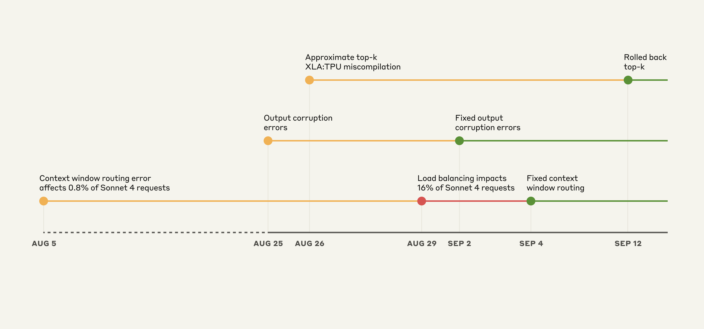
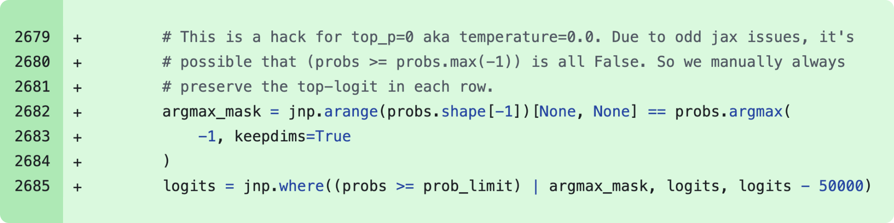
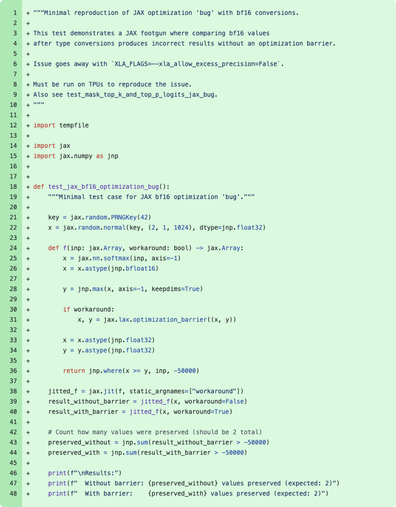

原文：A postmortem of three recent issues 来源：Anthropic Engineering | 2025-09-17 作者：Sam McAllister
· · ·
· · ·
在 8 月至 9 月初之间，三个基础设施 bug 间歇性地降低了 Claude 的响应质量。我们现已解决这些问题，并想解释发生了什么。
8 月初，一些用户开始报告 Claude 响应质量下降。这些初始报告很难与用户反馈的正常波动区分开来。到 8 月下旬，报告频率和持续性的增加促使我们启动了一项调查，最终发现了三个独立的基础设施 bug。
明确声明：我们从不因需求、时间或服务器负载而降低模型质量。 用户报告的问题完全是基础设施 bug 造成的。
我们认识到用户期望 Claude 提供一致的质量，我们对确保基础设施变更不影响模型输出保持极高标准。在这些近期事件中，我们没有达到这个标准。以下事后分析解释了出了什么问题、为什么检测和解决花费的时间比我们希望的更长，以及我们正在做什么改变来防止类似的未来事件。
我们通常不会分享这种程度的基础设施技术细节，但这些问题的范围和复杂性需要更全面的解释。
· · ·
我们通过第一方 API、Amazon Bedrock 和 Google Cloud 的 Vertex AI 向数百万用户提供 Claude 服务。我们将 Claude 部署在多个硬件平台上，即 AWS Trainium、NVIDIA GPU 和 Google TPU。这种方法提供了服务全球用户所需的容量和地理分布。
每个硬件平台有不同的特性，需要特定的优化。尽管存在这些差异，我们对模型实现有严格的等价标准。我们的目标是无论哪个平台服务请求，用户都应获得相同质量的响应。这种复杂性意味着任何基础设施变更都需要在所有平台和配置上进行仔细验证。
· · ·

图：Claude API 上的事件说明性时间线。黄色：检测到问题，红色：降级加剧，绿色：修复部署。
这些 bug 的重叠性质使诊断特别具有挑战性。第一个 bug 于 8 月 5 日引入，影响了约 0.8% 的 Sonnet 4 请求。另外两个 bug 来自 8 月 25 日和 26 日的部署。虽然初始影响有限，但 8 月 29 日的负载均衡变更开始增加受影响的流量。这导致更多用户遇到问题，而其他人继续看到正常表现，产生了令人困惑和矛盾的报告。
· · ·
8 月 5 日，一些 Sonnet 4 请求被错误路由到为即将推出的 100 万 token 上下文窗口配置的服务器。这个 bug 最初影响了 0.8% 的请求。
8 月 29 日，一次常规负载均衡变更无意中增加了路由到 100 万上下文服务器的短上下文请求数量。在 8 月 31 日受影响最严重的时段，16% 的 Sonnet 4 请求受到影响。在此期间发出请求的 Claude Code 用户中，约 30% 至少有一条消息被路由到错误的服务器类型，导致响应质量下降。
在 Amazon Bedrock 上，从 8 月 12 日起，错误路由流量峰值为所有 Sonnet 4 请求的 0.18%。在 Google Cloud 的 Vertex AI 上，8 月 27 日至 9 月 16 日期间，错误路由影响了不到 0.0004% 的请求。
然而，一些用户受到的影响更严重，因为我们的路由是"粘性的"。这意味着一旦请求被错误服务器服务，后续跟进请求很可能继续被同一个错误服务器服务。
解决方案： 我们修复了路由逻辑，确保短上下文和长上下文请求被导向正确的服务器池。修复于 9 月 4 日部署。第一方平台和 Google Cloud Vertex AI 的推出于 9 月 16 日完成，AWS Bedrock 于 9 月 18 日完成。
· · ·
8 月 25 日，我们向 Claude API TPU 服务器部署了一个错误配置，导致 token 生成期间出错。一个由运行时性能优化引起的问题偶尔会给在给定上下文中应该很少产生的 token 分配高概率——例如在响应英文 prompt 时产生泰文或中文字符，或在代码中产生明显的语法错误。
一小部分用英文提问的用户可能在响应中间看到了"สวัสดี"之类的内容。
这种损坏影响了 8 月 25-28 日对 Opus 4.1 和 Opus 4 的请求，以及 8 月 25 日至 9 月 2 日对 Sonnet 4 的请求。第三方平台未受此问题影响。
解决方案： 我们识别了问题并于 9 月 2 日回滚了变更。我们已在部署流程中添加了对意外字符输出的检测测试。
· · ·
8 月 25 日，我们部署了改进 Claude 在文本生成期间选择 token 方式的代码。这个变更无意中触发了 XLA:TPU¹ 编译器中的一个潜在 bug，已确认影响了对 Claude Haiku 3.5 的请求。我们也认为这可能影响了 Claude API 上 Sonnet 4 和 Opus 3 的一部分请求。第三方平台未受此问题影响。
解决方案： 我们首先观察到该 bug 影响 Haiku 3.5 并于 9 月 4 日回滚。后来我们注意到用户报告的 Opus 3 问题与此 bug 兼容，于 9 月 12 日回滚。经过广泛调查，我们无法在 Sonnet 4 上重现此 bug，但出于谨慎决定也进行回滚。同时，我们 (a) 一直与 XLA:TPU 团队合作修复编译器 bug，(b) 推出了使用精确 top-k 和增强精度的修复。详见下方深入分析。
· · ·
为了说明这些问题的复杂性，以下是 XLA 编译器 bug 如何表现以及为什么它特别难以诊断。
当 Claude 生成文本时，它为每个可能的下一个词计算概率，然后从这个概率分布中随机选择一个样本。我们使用"top-p 采样"来避免无意义的输出——只考虑累积概率达到阈值（通常 0.99 或 0.999）的词。
在 TPU 上，我们的模型跨多个芯片运行，概率计算发生在不同位置。要对这些概率排序，我们需要在芯片之间协调数据，这很复杂²。
2024 年 12 月，我们发现 TPU 实现在温度为零时偶尔会丢弃最高概率的 token。我们部署了一个变通方案来修复这种情况。
图：2024 年 12 月修补意外丢弃 token bug（温度=0 时）的代码片段
根本原因涉及混合精度算术。我们的模型以 bf16（16 位浮点）计算下一 token 概率。然而，向量处理器原生是 fp32 的，所以 TPU 编译器（XLA）可以通过将某些操作转换为 fp32（32 位）来优化运行时。这个优化 pass 由 xla_allow_excess_precision 标志控制，默认为 true。
这导致了不匹配：本应在最高概率 token 上达成一致的操作在不同精度级别运行。精度不匹配意味着它们对哪个 token 概率最高无法达成一致。这导致最高概率 token 有时完全从考虑中消失。
8 月 26 日，我们部署了采样代码的重写来修复精度问题，并改进了对达到 top-p 阈值极限的概率的处理。但在修复这些问题时，我们暴露了一个更棘手的问题。

图：作为 8 月 11 日变更一部分合并的最小化复现器代码片段，它定位了 2024 年 12 月"bug"的根本原因。实际上，这是 xla_allow_excess_precision 标志的预期行为。
我们的修复移除了 12 月的变通方案，因为我们认为已经解决了根本原因。这导致了近似 top-k 操作中更深层的 bug——一种快速找到最高概率 token 的性能优化³。这种近似有时返回完全错误的结果，但只在特定 batch size 和模型配置下发生。12 月的变通方案一直在无意中掩盖这个问题。

图：与开发该算法的 XLA:TPU 工程师分享的底层近似 top-k bug 复现器。代码在 CPU 上运行时返回正确结果。
这个 bug 的行为令人沮丧地不一致。它会根据无关因素变化——比如之前或之后运行了什么操作，以及是否启用了调试工具。同一个 prompt 可能在一次请求中完美工作，在下一次就失败。
在调查过程中，我们还发现精确 top-k 操作不再有曾经那样令人望而却步的性能损失。我们从近似切换到精确 top-k，并将一些额外操作标准化为 fp32 精度⁴。模型质量不可妥协，所以我们接受了轻微的效率影响。
· · ·
我们的验证流程通常依赖 benchmark 以及安全评估和性能指标。工程团队进行抽查并首先部署到小型"金丝雀"组。这些问题暴露了我们本应更早发现的关键缺口。
我们运行的评估根本没有捕捉到用户报告的降级，部分原因是 Claude 通常能从孤立错误中很好地恢复。我们自己的隐私实践也给调查报告带来了挑战。我们的内部隐私和安全控制限制了工程师访问用户与 Claude 交互的方式和时间，特别是当这些交互没有作为反馈报告给我们时。这保护了用户隐私，但阻止了工程师检查识别或重现 bug 所需的问题交互。
每个 bug 在不同平台上以不同速率产生不同症状。这创造了一个令人困惑的报告混合体，不指向任何单一原因。看起来像是随机的、不一致的降级。
更根本的是，我们过度依赖了噪声较大的评估。虽然我们意识到在线报告增加了，但我们缺乏将这些与每个近期变更联系起来的清晰方法。当负面报告在 8 月 29 日激增时，我们没有立即将其与一个看似标准的负载均衡变更联系起来。
· · ·
随着我们继续改进基础设施，我们也在改进评估和预防类似 bug 的方式——跨所有服务 Claude 的平台。以下是我们正在改变的：
更敏感的评估： 为了帮助发现任何给定问题的根本原因，我们开发了能更可靠地区分正常和异常实现的评估。我们将持续改进这些评估以更密切地监控模型质量。
在更多地方进行质量评估： 虽然我们定期在系统上运行评估，但我们将在真正的生产系统上持续运行它们，以捕捉上下文窗口负载均衡错误等问题。
更快的调试工具： 我们将开发基础设施和工具，在不牺牲用户隐私的情况下更好地调试社区来源的反馈。此外，这里开发的一些定制工具将用于减少未来类似事件的修复时间。
评估和监控很重要。但这些事件表明，当 Claude 的响应不符合通常标准时，我们也需要来自用户的持续信号。观察到的具体变化报告、遇到的意外行为示例、以及跨不同用例的模式——这些都帮助我们隔离了问题。
用户继续直接向我们发送反馈仍然特别有帮助。你可以在 Claude Code 中使用 /bug 命令，或在 Claude 应用中使用"踩"按钮来这样做。开发者和研究人员经常创造新的有趣方式来评估模型质量，补充我们的内部测试。如果你想分享你的方法，请联系 feedback@anthropic.com。
· · ·
¹ XLA:TPU 是将 XLA 高级优化语言（通常使用 JAX 编写）翻译为 TPU 机器指令的优化编译器。 ² 我们的模型对单个芯片来说太大，被分区到数十个或更多芯片上，使我们的排序操作成为分布式排序。TPU（就像 GPU 和 Trainium）也有与 CPU 不同的性能特性，需要使用向量化操作而非串行算法的不同实现技术。 ³ 我们一直使用这种近似操作是因为它带来了实质性的性能改进。这种近似通过接受最低概率 token 的潜在不准确性来工作，这不应影响质量——除非 bug 导致它丢弃了最高概率 token。 ⁴ 注意，现在正确的 top-k 实现可能导致 top-p 阈值附近 token 包含的轻微差异，在极少数情况下用户可能需要重新调整 top-p 的选择。
· · ·